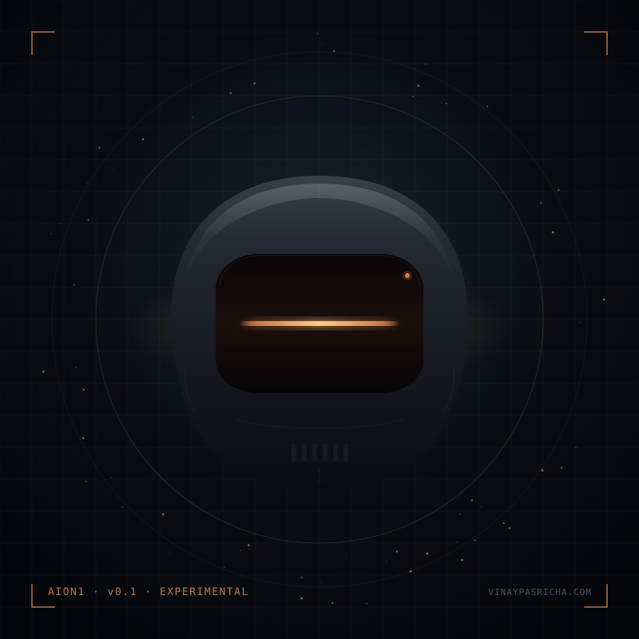

Vinay's experimental AI assistant. He'll listen, sharpen, and relay your message.
Three or four short exchanges. Edit, then send.

Vinay typically replies within a few days. If a week passes without word, write directly: vinay@vinaypasricha.com